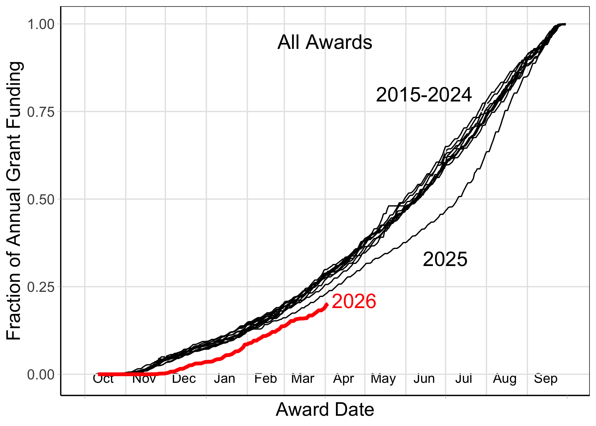
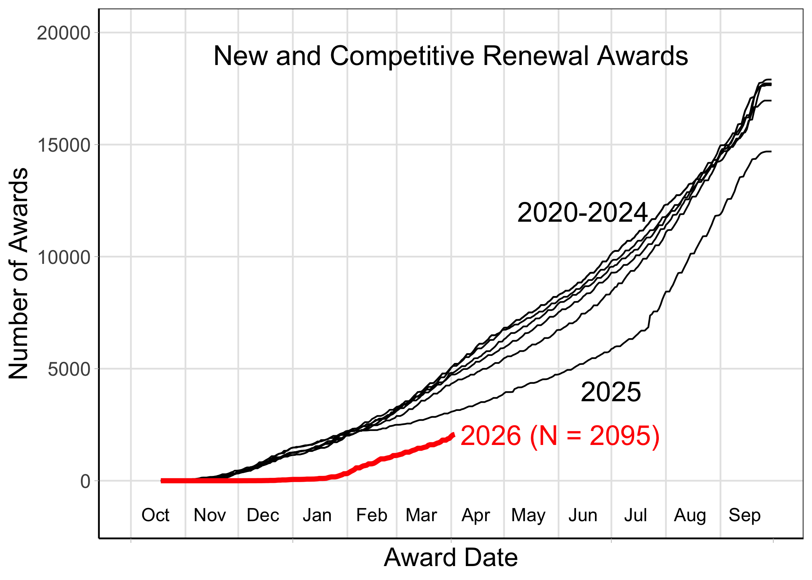
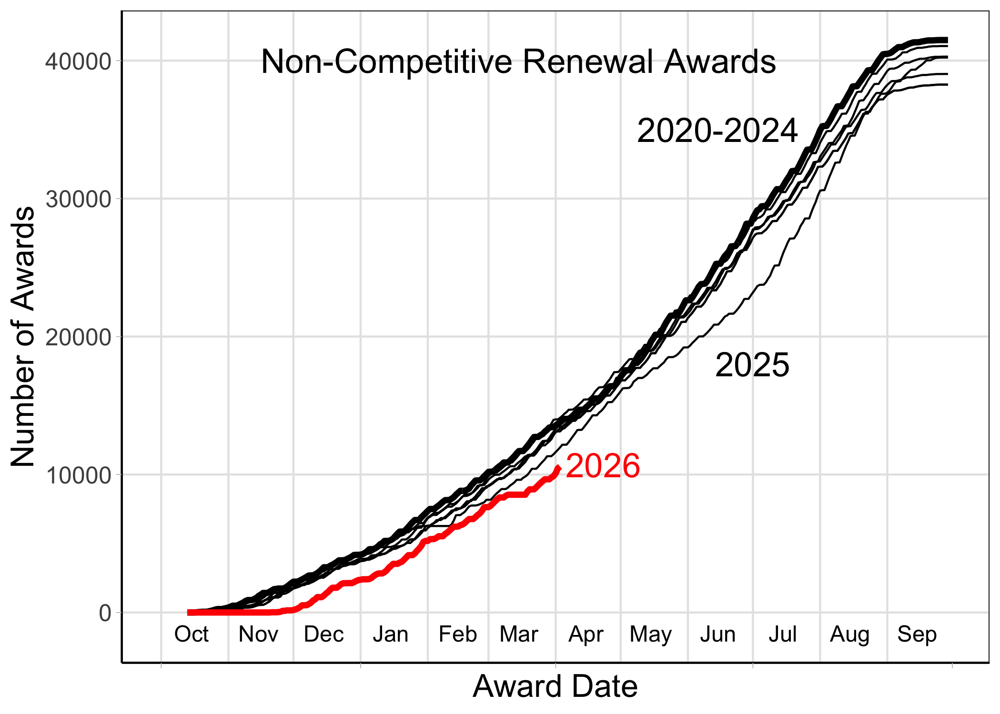
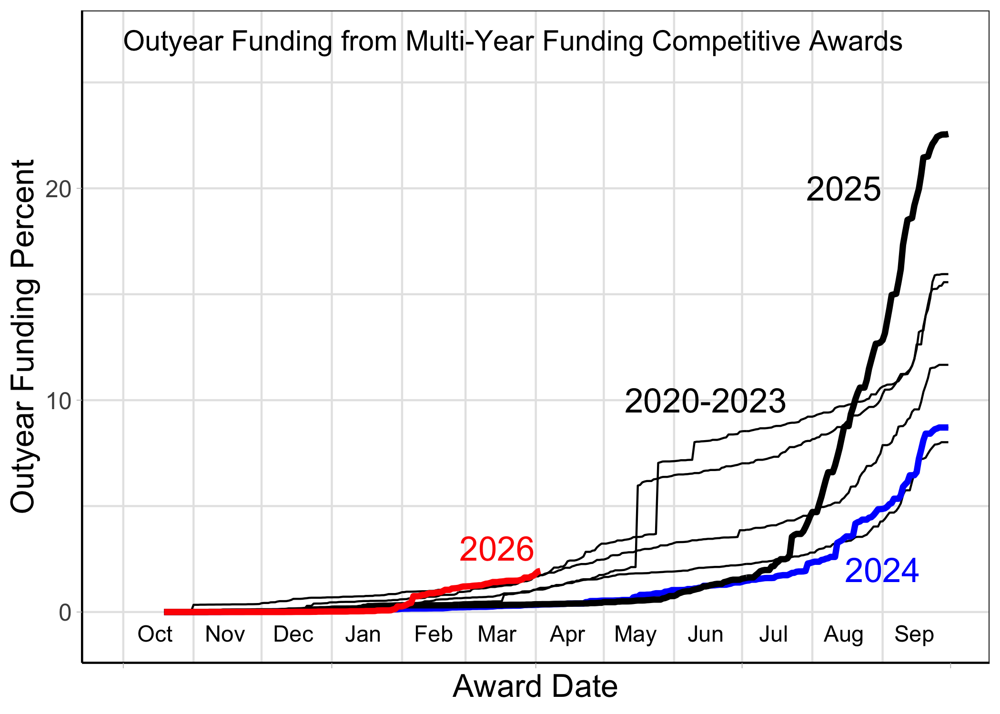
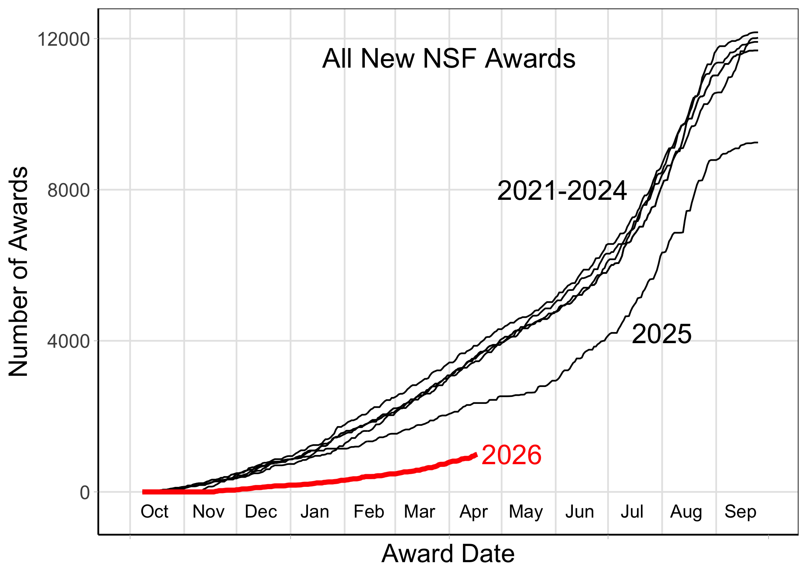
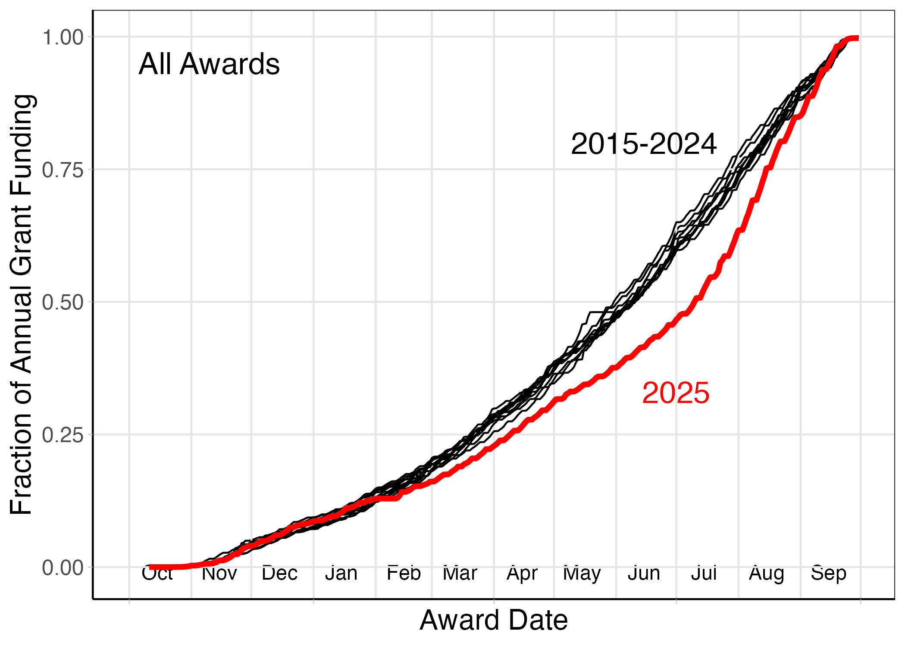
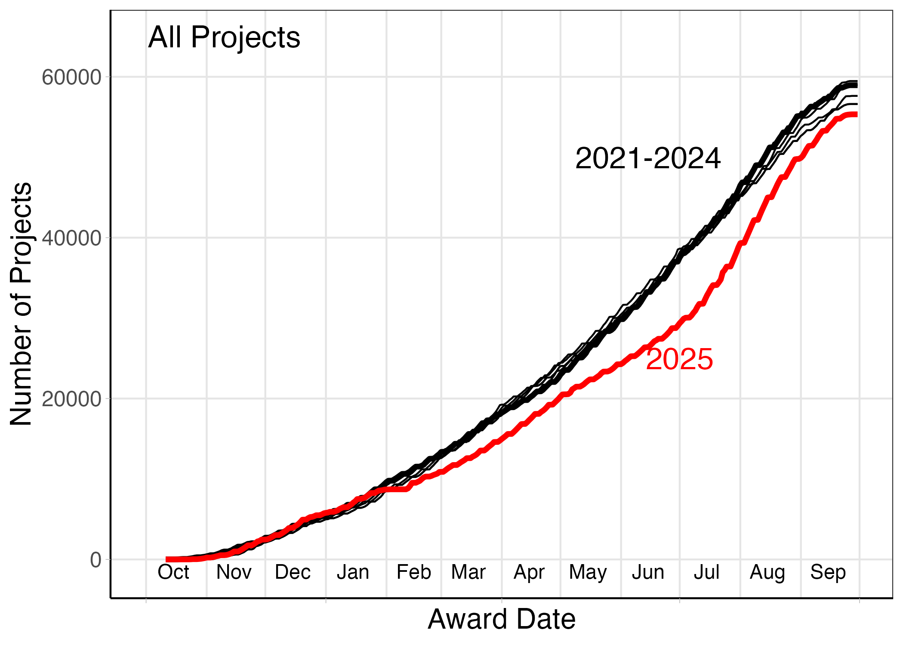
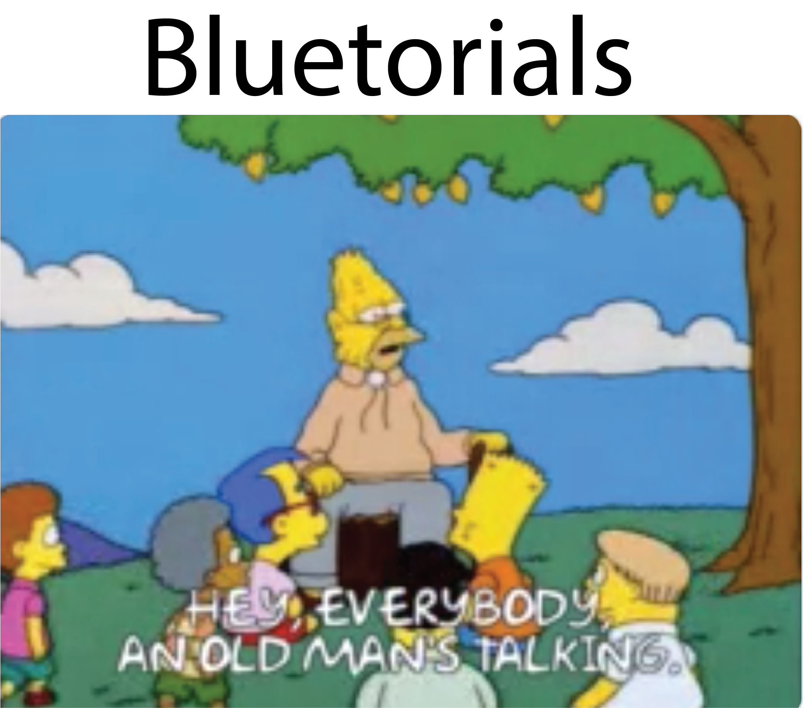
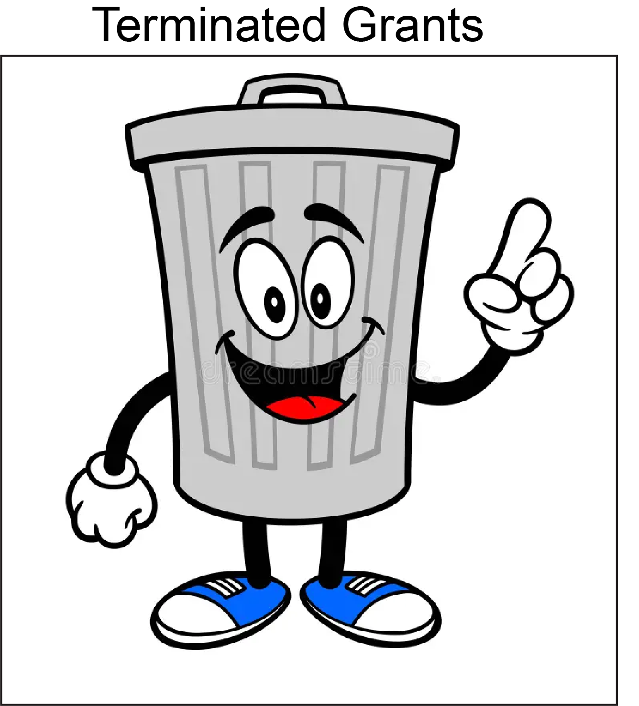
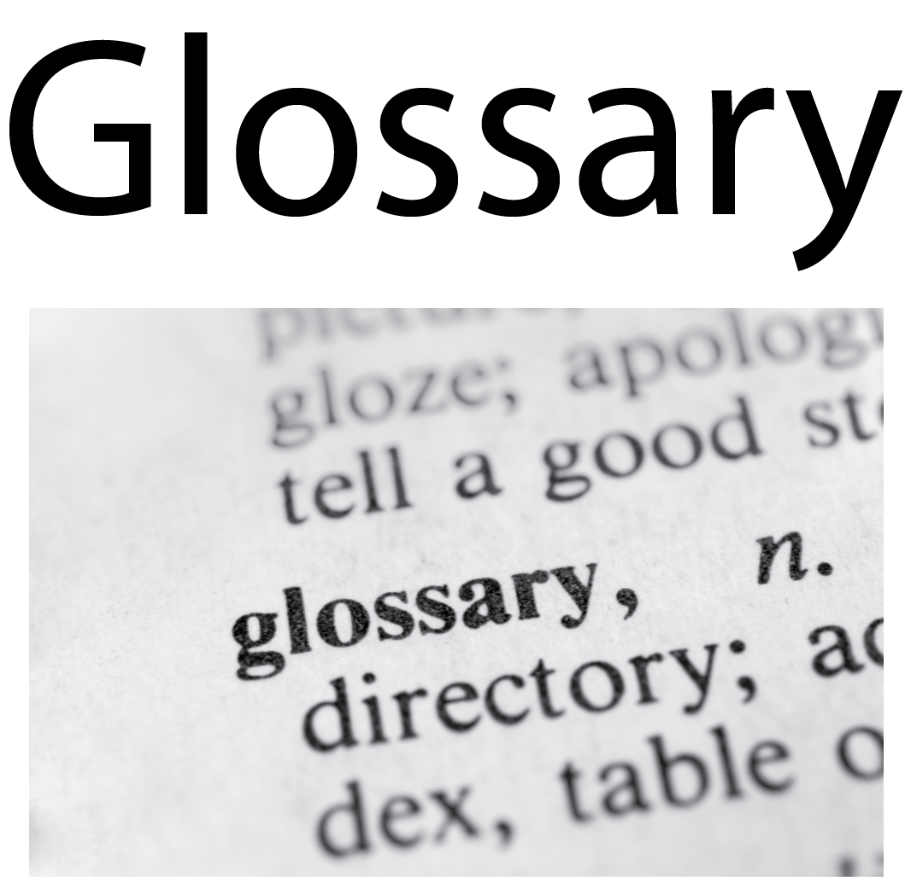

NIH Changes Since January 20, 2025
Fiscal Year 2026 Funding Curve (through April 3rd, 2026)

New and Competitive and Non-Competitive Renewal Awards


NIH Multi_Year Funded Competitive Grants (Outyear Commitments)

NSF Funding of New Grants (through April 17th, 2026

Final Results for Fiscal Year 2025


NIH Award Timing and the Need for Acceleration



